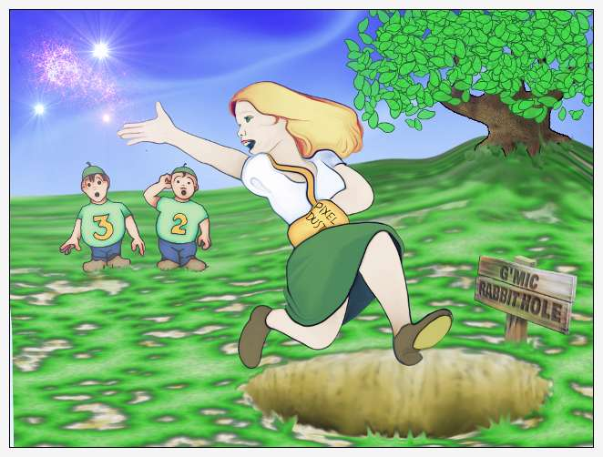
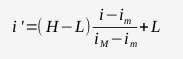

For the poor, blighted souls who once pranced, care-free, through the flowered vales of Gimp-G'MIC, spreading Pixel Dust and making fine digital art, but ― in a moment of unguarded curiosity ― tried one of those mysterious “underlying commands” lurking in the “custom code” section of the Gimp-G'MIC plugin, fell into the Rabbit Hole and now can't produce an image that is otherwise all black, or all white, or posterized, or inverted, or in Strange Colors. There are two commands which can lead you again to fairness and light:
-cut, which sounds dreadful, and is dealt with elsewhere
-normalize, which is probably the command you are looking for
-normalize performs H-L Normalization: image data, i, ranging between a maximum value iM and a minimum value im, can be shifted and scaled to fall between a new maximum, H, and minimum L by the formula:

where the rescaled image data i' fall within the new boundaries set by H, and L.
The format of the command is:
-normalize value0[%],value1[%]
-normalize [image0],[image1]
-normalize [image]
Normalization is typically the penultimate G'MIC command before -output, which often references an file with a specific format that includes prescribed maximum and minimum values. For example, the eight-bit Portable Network Graphics file format expect image data to fall within the range of 0 – 255, in terms of the normalization relation, H = 255 and L = 0. If you plan on using a downstream paint program, or – in the case of the Gimp-G'MIC custom code plugins – return the image to a Gimp layer, use of the -normalization command is almost mandatory, because the G'MIC image stack, distinct from the Gimp image layer set, can be in one of a variety of numeric formats and the data can range in whatever ranges floating point can support. See “Images as Datasets” for further details.
-normalize (+): { value0[%] | [image0] },{ value1[%] | [image1] } | [image] Linearly normalize values of selected images in specified range. (eq. to '-n'). Example(s): image.jpg -split x,2 -normalize[-1] 64,196 -append x
From G'MIC Handbook Version 1.5.8.1 Updated: December 31, 2013 04:51 PM UTC